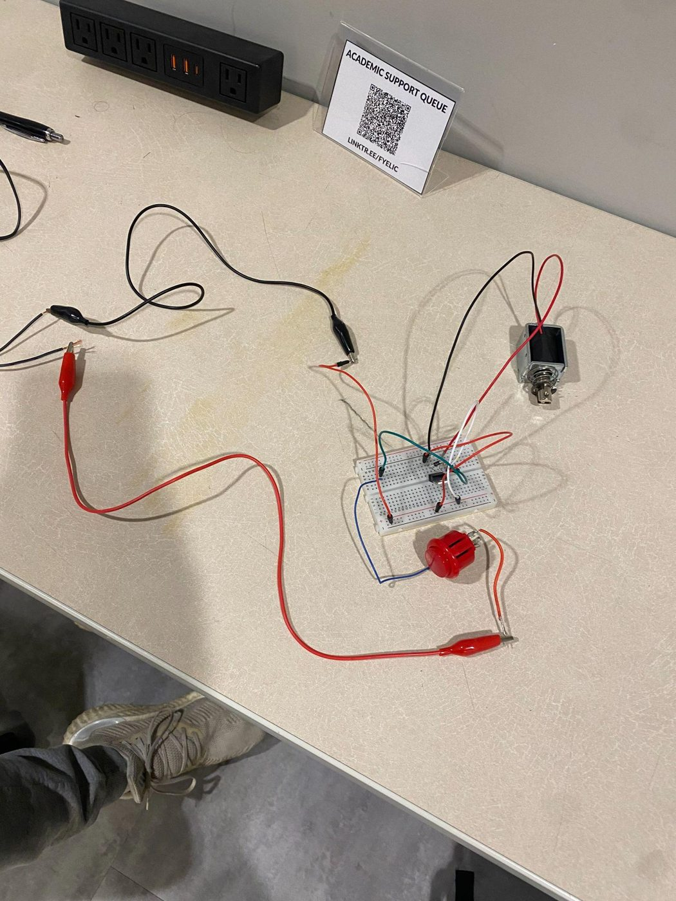
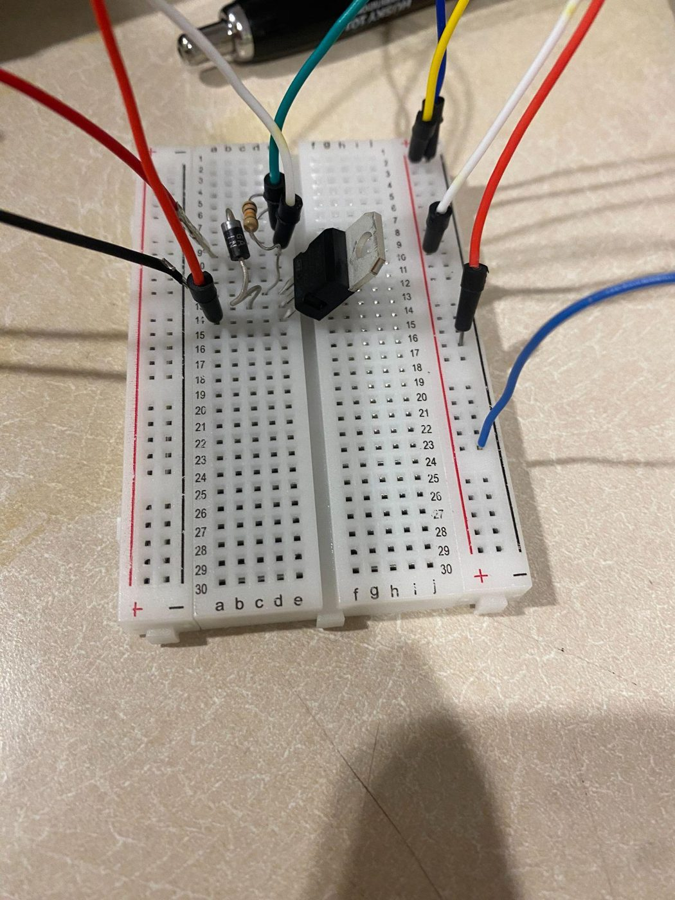
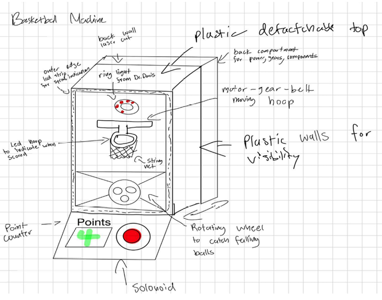
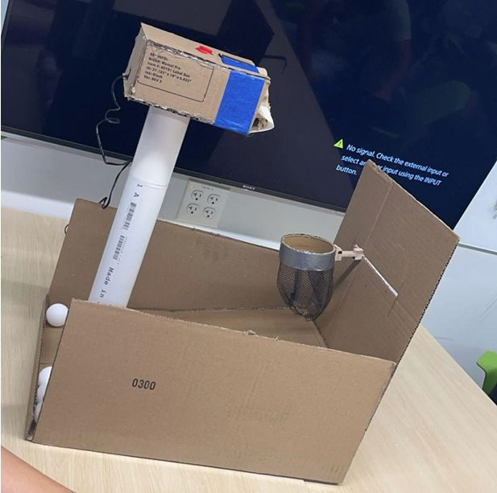
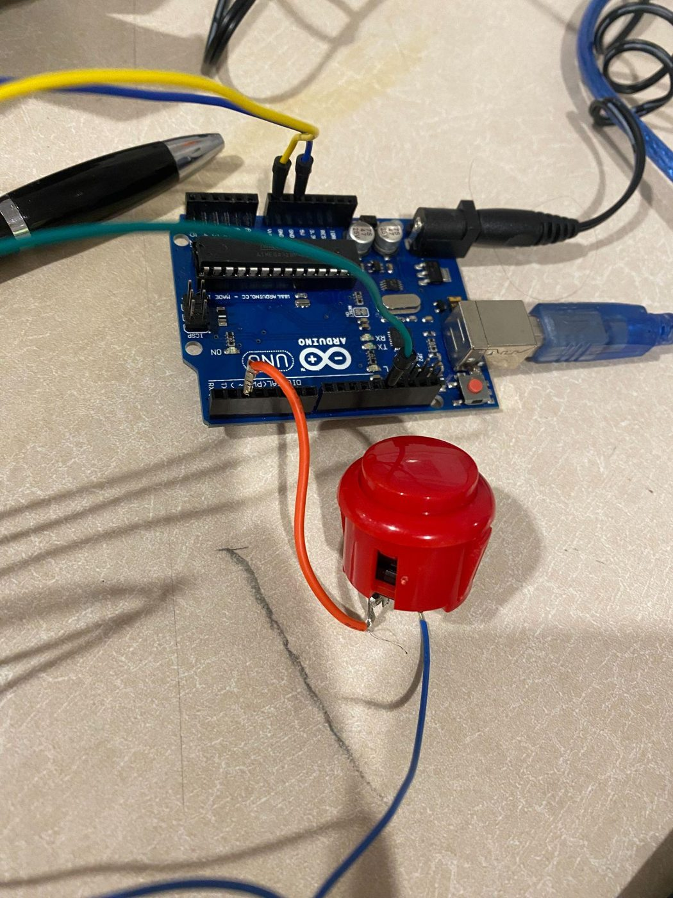
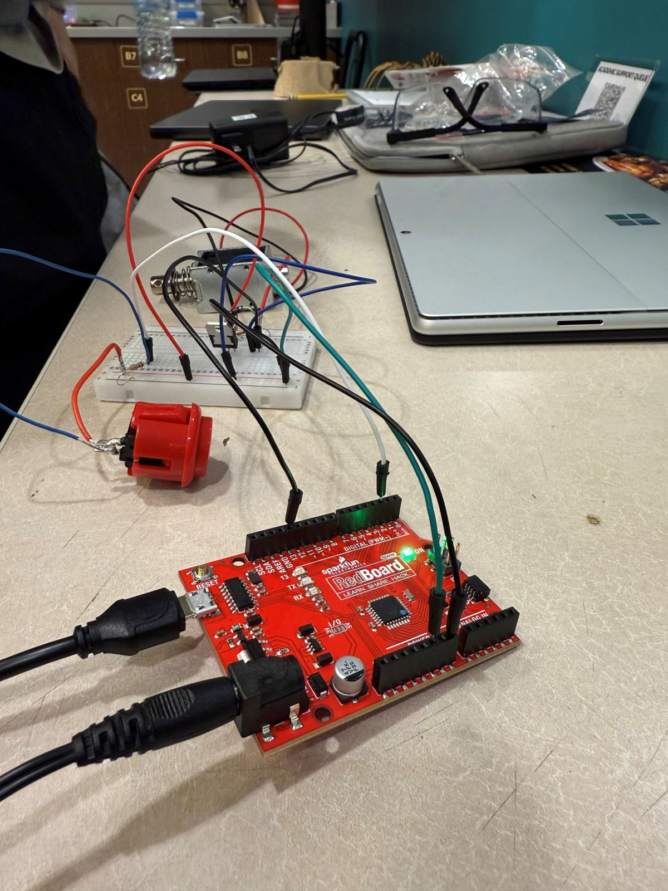

Arcade Basketball Machine
- Dates
- Sep 2024 – Jan 2025
- Context
- Cornerstone Engineering 1 (GE 1501), Northeastern University, team of four
- Role
- Team lead; actuation and electronics: soldering, crimping, and wiring; the solenoid's power supply; the ring light; the servo-mounted obstacles
- Tools
- Arduino (C++) · 12 V solenoid · servo · LED strip and ring light · soldering · crimping · vacuum forming · woodworking
Built the actuation and electronics for a four-person arcade basketball game, from the solenoid's 12 V supply to the ring light and servo-driven obstacles, and kept it running through the full Northeastern Expo.
Key numbers
- Round length
- 60 s
- Solenoid supply
- 12 V, 2 A
- Arduino boards
- 3
- Team size
- 4





Objective and constraints
- Score as many points as possible in 60 seconds while a moving obstacle blocks shots; top scores go on a leaderboard. The game recreates the high release point of the tallest NBA players.
- The whole project had to fit in one duffel bag (about a 10 × 30 in base) and be light enough for one person to carry.
How it works
Pressing the arcade button fires an Arduino-controlled 12 V solenoid that launches a ping-pong ball at the hoop, while a servo sweeps wooden obstacles across the shot. Balls roll back down a ramp for the next shot. Three Arduino boards ran the solenoid, servo, LED strip, ring light, and a light sensor.
What I did
- Soldered and crimped all of the electronics, including the ring-light wiring and extended jumper wires.
- Coded the ring light and worked with a teammate on the LED-strip code.
- Vacuum-formed and sanded a light diffuser for the ring light.
- Designed and built the wooden obstacles mounted on the moving servo.
- Powered the solenoid: it needed 12 V and 2 A, more than a laptop or breadboard could supply, so I sourced a 12 V adapter and a barrel-jack adapter to run it safely.
- Worked through the overheating that fried two Arduino boards: changed the driver type and the ball mass, and on the third board secured every connection, after which the solenoid ran without issues.
How the design changed
- The cardboard prototype (Milestone 2) playtest exposed five problems:
- no scoring or timer
- an inconsistent, hand-moved hoop
- a cardboard button housing that collapsed when players slammed the button
- manual reloading
- a solenoid too weak to launch from below, which fried the board when overused
- The solenoid was too weak, so the team raised the launch point (a teammate's shooter-elevation mechanism) and adjusted the launch angle and height.
- For portability, the team replaced the acrylic casing with nets, turned the layout horizontal, and swapped a planned rotating ball feeder for a ramp.
- Teammates led the multi-board code integration, the 3D printing and AutoCAD laser-cut designs, and the laser cutting and assembly.
Result
The game ran through the full Northeastern Expo on three Arduino boards. The team also got the ball to spin down through the hoop, which fixed an earlier scoring flaw. It was most popular with competitive players, some of whom tried to "hack" the game for faster points.
Gallery







